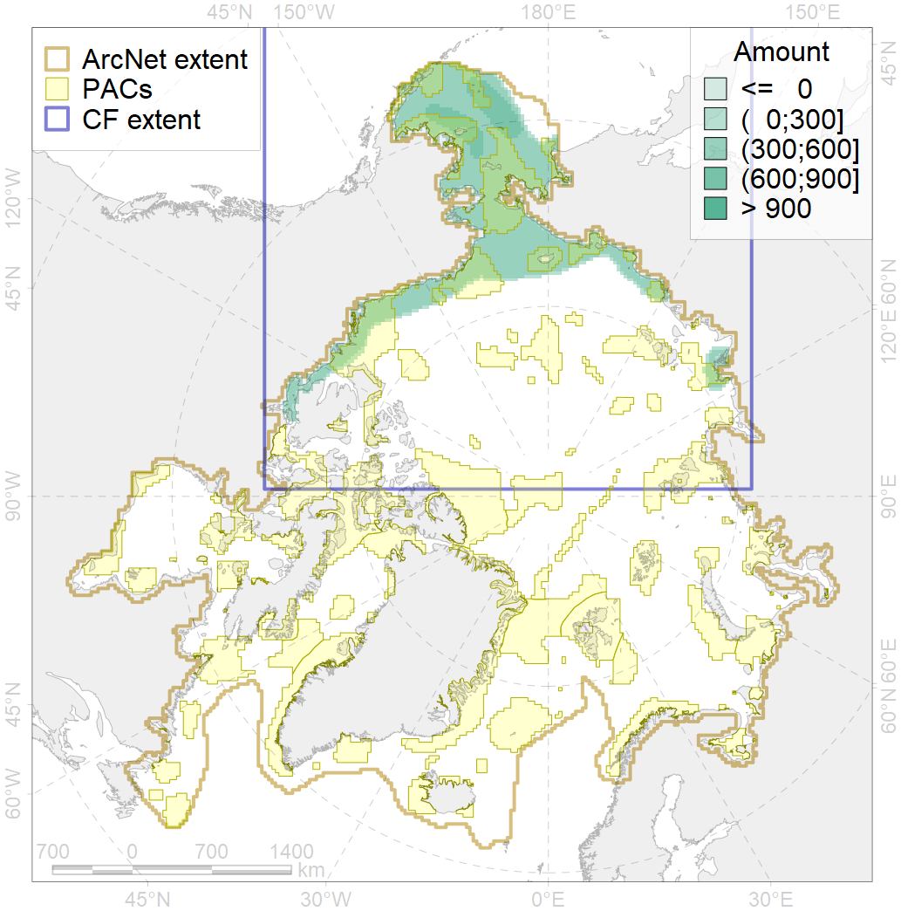
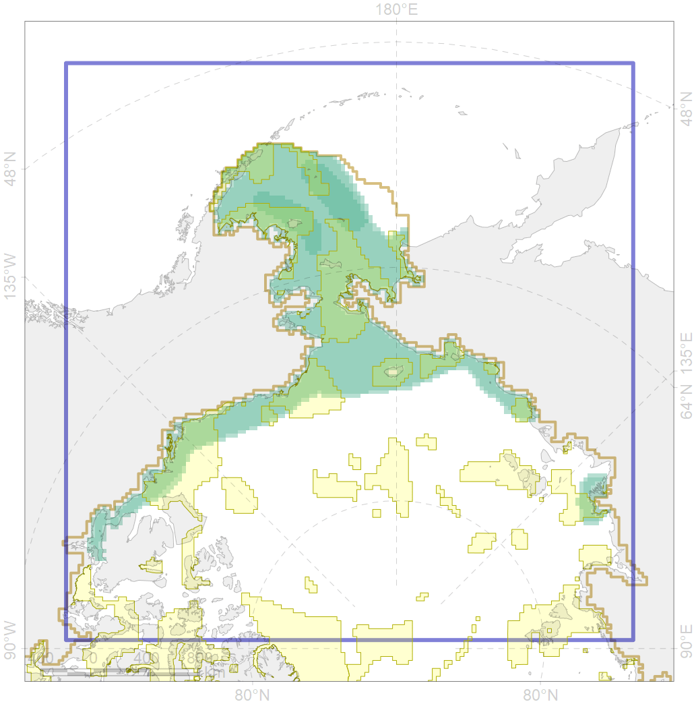

4070

| CF ID | 4070 |
| CF Name | Local forms of the White-Sea herring (Clupea pallasii) |
| Time Period | 1930s-2010s |
| Source(s) | Altukhov et al., 1958 |
| Seasonality | January-December |
| Depth Horizon | usually 0-70 m |
| Methodology | Compiled from literature sources based on field observations |
| Author Name | N. Chernova |
| Notes | |
| Conservation Target Set in the Scenario | 0.24 |
| Conservation Target Achieved in the Scenario | 0.426 (Scenario: 177.6%) |
| PAC ID | Proportion in the PAC | Contribution to ArcNet Target Achievement | PAC’s Contribution to the Achieved Target |
|---|---|---|---|
| 1 | 2.7% | 10.9% | 6.1% |
| 2 | 3.6% | 12.1% | 6.8% |
| 3 | 7.9% | 30.3% | 17.0% |
| 4 | 1.1% | 3.6% | 2.0% |
| 5 | 11.7% | 44.7% | 25.2% |
| 6 | 0.1% | 0.2% | 0.1% |
| 7 | 2.1% | 8.8% | 4.9% |
| 8 | 1.8% | 5.7% | 3.2% |
| 9 | 0.3% | 0.9% | 0.5% |
| 10 | 0.8% | 2.8% | 1.5% |
| 12 | 0.9% | 3.5% | 2.0% |
| 60 | 4.4% | 14.9% | 8.4% |
| 61 | 0.0% | 0.2% | 0.1% |
| 62 | 5.4% | 20.9% | 11.8% |
| inner | 42.9% | 159.4% | 89.8% |
| outer | 57.1% | 18.2% | 10.2% |